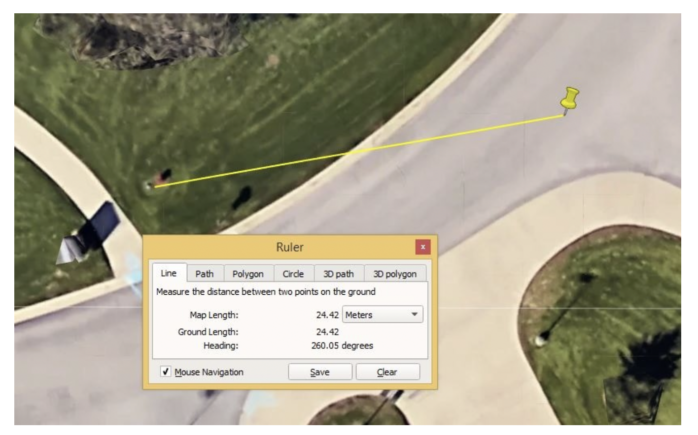

8. Collecting Points Data Using GPS
In this lab, you will use your smart phone to collect coordinates for at least twenty similar features in your neighborhood. I suggest fire hydrants, but you can record the location of anything that is of interest to you including trees, churches, restaurants, bus stops, etc.
For each feature of interest, you will record its coordinates and its physical condition. You can also consider taking photographs of the features. Afterwards, we will display and analyze the data using geospatial software.
8.1. Pre-Planning your GPS Project
To successfully carry out a GPS data collection project, some amount of pre-planning is necessary. Some things that you need to d0 include:
1. Select a Smart Phone GPS App
There are many smart phone GPS mapping applications available. Some require purchases while others are free. Each app has its own advantages and disadvantages, but in choosing a mapping application, there are certain things that need to considered. These include:
Ease of learning how to use the app
Whether the app allows you to add and edit notes associated with the features. Notes should be in the form of text and images. Videos are a plus.
Whether the app is in active development
Whether the app has GPX support (i.e., able to create waypoints, customizable log intervals)
Whether one can load data offline into the app.
The stated accuracy level of the app.
For this lab, there is no restriction on which app you can use, however, ArcGIS Survey123 is recommended. The best place to start looking for an app is on your phone. Check to see if one is already installed on your phone. If you locate one, do a quick Internet review to ascertain its capabilities.
If no GPS app is present on your phone, or you wish to install one that you really like, you can get one from the Play Store or the App Store. Below is a list of some useful GPS apps that are available for downloaded from Google Play Store or Apple’s App Store.
Android Apps
GeoPaparazzi . This app is good for recording the location and attribute of features through user created forms. Feature attributes are recorded in the form of text, audio or pictures. Files can be exported as KML and GPX, which are popular formats for storing points data.
GPS Essentials . This is a good app for fieldwork in the social and environmental sciences. It logs waypoints and routes and allows users to record attributes of features. It will also allow you to export to KML and GPX.
ArcGIS Survey123. This is an excellent app for conducting surveys that includes some location questions. It smoothly integrated with other ArcGIS poducts when it comes to data visualization and data analysis.
ArcGIS Field Maps. Many organizations use ArcGIS Field Maps or its predecssor,ESRI Collector, for collecting location-based data, e.g., utility lines, other assets, geological data, etc. This is a good app to master if you work in the ESRI world. The software also smoothly integrated with other ArcGIS Products when it comes to data visualization and data analysis.
OpenDataKit. This app lets you log GPS positions and save them to an offline database.
GAIA GPS. This is a great hiking navigation app that can be utilized for field data collection. It has an excellent collection of base maps that can be used offline.
Geology Sample Collector. This app has a built-in theodolite, GPS, Clinometer, Camera. Data backup can be done to its server database and synced with the mobile device as well.
Maverick GPS Navigation. This app is good for recording tracks and points in GPX format and importing them in QGIS to create shapefiles.
IOS Apps
EpiCollect. EpiCollect will work on both iOS and Android.
FileMaker Go. If you want a solution that is proven to work for form creation on iOS, this is it. It does work, but it’s not Open Source.
IOS Gaia GPS. This is a great hiking navigation app that can be utilized for field data collection.
Since each GPS app is different, it will be your responsibility to familiarize yourself with the details of how the app you selected phone works. However, this is a straight forward process and there is broadly similarity in how the apps work. Later in this Chapter, I will illustrate how to collect GPS data using GeoPaparazzi.
2. Decide on the coordinate system that will be used to collect the GPS points. For the most part, the default setting of the GPS apps will be latitude longitude. You should collect your data in latitudes/longitudes unless there is a good reason not to. It is also a good idea to collect the coordinates in decimal degrees (DD) format, as the default setting of most GIS software is decimal degrees, and this will make it easy to import your coordinates into the GIS software. In decimal degrees format, the coordinates will appear as shown below: Latitude: 40.714; Longitude: -74.006
Finally, you should be aware of the datum used for your coordinates. The datum defines the size and shape of the earth and is the starting point for all maps. The US GPS uses the WGS 84 datum. In the US, current topographic maps are based on the GRS 1980 datum, which is functionally equivalent to WGS 84. This means that GPS points will be exactly located on maps that are based on GRS 1980 datum.
3. Ascertain the level of accuracy of your GPS.
You should be aware that a single measurement of a point feature using a smart phone GPS is likely to yield positional errors in the region of 5-10 meters without differential correction. The effect of this is that when the point is displayed in a GIS software, it may not exactly reference the feature of interest. This is clearly seen in the illustration below where the plotted point (the yellow marker) is 24.42 meters from the hydrant.
How do you determine the accuracy level of your smartphone GPS receiver? Some smart phones GPS software are purposefully built to read and report estimated accuracy directly from the GNSS receiver. If your GPS software has this functionality, then you can use it to ascertain the accuracy of your GPS points.
Another way to get the accuracy of your GPS device is to use it to get the coordinates of a survey mark whose coordinates have been previously accurately determined. You then compare the results of the smart phone receiver with the known coordinates of the survey mark. The difference in the value of the coordinates is the error associated with the GPS.
To improve the quality of the coordinates you collect, make sure that you get a clear view of the sky when you are collecting the points so that the GPS signals are not being affected by trees or buildings. Also, stand at a given location for at least a minute to give the receiver sufficient time to settle on the coordinates of your position. Finally, you should wait for your receiver to be receiving signals from at least 4 satellites before recording data.
4. Decide on the best time of the day to best collect the GPS points.
Recall the concept of Position Dilution of Precision (PDOP). Poor satellite geometry may give rise to unacceptable errors in the coordinates of points collected. This problem can be reduced by selecting a time of the day to collect data when the overhead positions of satellite will result in in good PDOP.
Trimble, a company that makes GPS receivers, has a software on their website that can be used to plan the best time of day to collect GPS coordinates. Let’s hop over to Trimble and have a look at their GPS tracking software. The main page of the website is shown below. To the left is a list of GNSS satellites and their status. To the far right is a locator map.
Click on the map and scroll to the area where you want to conduct your GPS field work and click on it. This action will populate the latitude/longitude in the middle of the screen.
Make sure you select the date and time range for the field work.
The software will use this data to show overhead positions of the satellite on the day you selected.
Once you have entered all the data, click “Apply”. Now click on Charts menu at the top of the screen. The software will now show you charts of the number of satellites overhead during your field work period, the visibility status of the satellites, PDOP status, etc.
Since we are particularly interested in PDOP, please look over the DOPs chart. Look at PDOP values for different times of the day. Generally, PDOP values below 6 are good enough and values below 4 are even better. Values at 9 or higher mean that the user should not rely on the accuracy of that data collected at that time and should wait until a better PDOP value could be attained by the satellites.
8.2. Field Data Collection with Survey123
I strongly encourage you to do field data collection using Survey123. This platform smoothly integrates data collection with data vsisualization and data analysis apps on the ArcGIS Platform. Data collected by Survey123 can be immediately passed to ArcGIS Online and other software within the ESRI suite.
Getting Started
As part of a literature review on fire hydrant surveys, I came across a data entry form from the Atlanta Fire Department that can be used for a fire hydrant survey (See illustration below). Data entry forms are devices for convenient entering of data into a spreadsheet or database. Instead of entering data directly into a survey’s spread sheet or database table, users can enter data into a form which, in turn, will post the data to the spreadsheet or database table. The Atlanta Fire Department’s data entry form seems easy to recreate, so I will use it as my example for this project. You can do a background reviews of form designs suitable to your data collection project.
Visit Survey123 web site (https://survey123.arcgis.com) and sign in using your ArcGIS Online organizational account.
After signing in, click on “Create a New Survey” to create a new survey form.
You will be presented with the option to use Web Designer or Survey123 Connect. I suggest you start with Web Designer as it is much easier to use compared with Survey123 Connect, which is used for advanced form design. After publishing a survey created by web designer, if you wish, you can edit/modify it using Survey123 Connect, however, the reverse is not true.
Enter a name for the Survey as well as some key words, for example, enter “Fire Hydrant Survey” as the name. You can re-enter “fire hydrant survey” as the tags. Click Create.
The page that appears lets you design the data entry form. Start designing the form by dragging items from the panel to the right to the form on your left. You can also double click on the panel items to add them to the form. Also, note that the form should have all the fields as the source, but the appearance doesn’t have to be exact. You can change things around to make to make the form easy to create in Survey123.

The illustration below shows the beginning of the form. Noticed that I placed a map object unto the form. After placing the map object on the form, I configured it so that it defaults to a location and zoom level of interest. Users will use this map to enter the coordinates of the location of the hydrants. Users can either tap on the location of the hydrant on the map to records the coordinates or they can enter a street address. The points that are entered on this map will eventually be displayed in ArcGIS Online.
After creating and publishing the form, the software generates a URL that can be used to bring up the survey on your cell phone or computer. You can view the form’s URL by clicking on Collaborate in the main menu. The URL for this form is: https://arcg.is/0DuHW00.
User Interaction with the Form
If you are the only person who will perform data entry for the project, then simply copy the URL for the form and enter it into a browser to access it. Thereafter you can perform data entry.
If multiple persons will perform data entry, then you can email each person a copy of the URL of the form for them to access it online and perform data entry. If the form is open to the general public, then the form’s URL can even be embedded into a website for people to access and fill out.
Another way that users can interact with your form is for them to download and install the Survey 123 app on their phone and use the app to access the form. This approach is useful if the form is to be reused repeatedly, as in a fire hydrant survey where data about hydrants must be repeatedly entered into the form by the same user. To obtain the Survey123 field app, visit one of the stores below and download the app to your phone.
iOS devices - iTunes App Store
Android devices - Google Play
Windows devices - Windows Store
After downloading and installing the app, open the application using the application icon. When the app starts, log in using your ArcGIS Online organization account.
After signing in, the app opens the My Surveys gallery. If this is the first time you are using the app, the gallery appears empty with the message, No surveys on device.
Select Get Surveys. The Survey123 app connects to your ArcGIS organization and searches for surveys to which you have access. Select and download the fire hydrant survey you created.
When the survey download is completed, a notification appears. Select OK then select Back to return to the My Surveys gallery page.
The Fire Hydrant Survey now appears in the gallery. Click on “Collect” to open the survey and administer it for a particular hydrant.
Data that is collected by these forms are stored on ESRI’s cloud server from where it can be accessed by ArcGIS Online.
Analyze Survey Data
Once all the forms have been completed, you can view the survey results in the Survey 123 for ArcGIS website. The steps below show how to view the survey data:
Sign in to the Survey 123 website using your ArcGIS organizational account.
Click the thumbnail to open the Overview page for your survey. The survey’s overview page displays information about the survey results.
Click the Analyze tab and explore the results of each question of the survey. Explore the word cloud if you entered more than 20 records.
Click the Data tab and visualize the location of survey items. The submitted survey features are shown on the interactive map that appears while the responses are shown in the attribute table. You may have to zoom in to see the features clearly.
To share the results of your survey, you click either on “Open in Map Viewer” to share it via ArcGIS Online or you can click on Export and save it as CSV, KML, etc. If you choose CSV, KML, etc, these formats can then be imported into ArcGIS Pro or ArcGIS Online.
8.3. Field Data Collection with Geopaparazzi
If you are already famiiar with Survey123 or if you want to use an Open Source platform for field data collection, you can use Geopaparazzi. In this section, I will illustrate the details of smart phone GPS field data collection using an open source app named Geopaparazzi. If you want to use this app, first download it from the app store, install it, then click on the app icon to start the program.
After starting Geopaparazzi, the main dashboard appears. This screen is shown below with labels.
A useful way to start interacting with the application is to click on the Project Info icon and enter basic information such as the name of your project, a description of the project, date, creator, etc. I strongly recommended that you create a new project for each field survey you conduct so as to avoid confusion in the registered data. Projects are saved in a single file in the home directory of the phone. The file is called geopaparazzi.gpap.
Once you are done entering basic project information, click on the three vertical dots on the top of the screen above the project info icon to access the GPS settings. Afterwards, click on “Status” to view the list of satellites ‘visible’ to the GPS in your smart phone. The screen also shows your current coordinates, elevation, speed, PDOP and other information.
Now click on the Map View icon. This action will allow you to see Geopaparazzi’s base map of your location. Also, Geopaparazzi comes with its own base map, it is possible for you import your own base map into the app. This is particularly useful if your work requires specialized maps of the study area. Within the Map View area, tools are available to center the map, manage bookmarks (waypoints), and manage notes. From within the View, you can also access the GPS log of collected tracks and waypoints.
Let’s start logging features. Go to the first feature of interest. Stand next to it for a moment then click on the GPS Toggle icon. When the dialog opens, enter a name for the point feature or use the default name. When you click ok, the GPS Toggle icon should turn orange and the GPS would begin logging. As further evidence that the GPS is logging data, the GPS icon at the top right of the screen would change to blue.
By default, the app will log the path you traverse. To record a single waypoint or marker along the path, click on the Map View icon. This time, you will be presented with a map zoomed in to the location whose coordinates you are logging.
Click on the star icon to the left of the screen. This will prompt you to enter the name of a bookmark or waypoint. Enter a name and click Ok. Immediately, the point location will be recorded.
While still in the Map View, you can click on the topmost icon to the top left of the page to access the Notes section. Enter notes for the feature you just recorded. You can enter text (text note), take a photo of the feature (image notes) draw a sketch of something of interest (sketch), or make a map note.
Once you are done taking notes, return to the Map View area. Continue moving along your path, while stopping at intervals to create a bookmark. Every time you want to create a bookmark, just click on the bookmark start icon, enter a name for the bookmark, and click ok.
If you wanted to see a list of the bookmarks you created, just click and hold down the bookmark star icon. The list of bookmarks appears. You can edit this list if you wish.
You can stop GPS logging features at any time. Simply back out of the Map View screen then click the GPS Toggle button to stop logging. To start GPS logging again, select the toggle button and enter a new log name.
You can view the GPS log to make sure that the point was successfully logged. To do so, tap on the bright orange icon at the left top of the Map View window. When the dialog opens, click on “GPS data list”. There you should see a record of the logs you created (See illustration below).
In the next section, we will focus on how to export your field data from Geopaparazi and import it into Google Earth and QGIS for viewing.
8.4. Exporting GPS Data from Smart Phones
Once you are done collecting GPS data, your next step is to move the data from the smart phone to a GIS or similar software for viewing or analysis. The details of this process are specific to the equipment that you are using.
Survey123 Users
If you are using Survey123, you do not have to worry about this data because, as mentioned earlier, data that is collected by the Survey123 forms are stored on ESRI’s cloud server from where they can be accessed by ArcGIS Online.
If you are using Survey123, to view your data, simply sign in to ArcGIS Online, click on Content, and look for the layer that contains your Survey123 data.
Open Source Users
If you are using Geopaparazzi or another open source software, most likely, you will have to connect your smart phone to a computer. The connection can be done via cable or wirelessly. Appropriate software is then used to transfer the data.
To begin exporting your data from Geopaparazzi, click on the export icon at the main menu.
When the Export dialog, appears, select a file format to use. I suggest either kmz or GPX format, as both of these formats can be easily read by Google Earth.
After exporting the data, the next step is to move the data to your computer. There are various ways to accomplish this task. One of the simplest ways to do it is by simply connecting your phone to a computer using a USB cable. You can then access your phone’s storage from the File Explorer on your PC. When you connect the two devices, they should detect each other’s presence.
If your phone does not contain any data when viewed from the computer, it may be because you did not click on ‘File Transfer mode’ on your phone. Back on the main screen you will see a screen that says “Charging: Tap for other options” or something similar. When you tap the screen a dialog similar to the one below appears. Select the File Transfer Options and you should be able to access your phone’s storage from your computer.
After gaining access to GeoPaparazzi’s project folder, copy the data to a folder on your computer.
8.5. Importing GPS Points into QGIS
To view your data in QGIS, do the following:
Start a new QGIS Project.
Click on Layer/Add Layer/Add Vector Layer as shown below.
When prompted for a data source select the KMZ file you just exported. You may have to ensure that your browser is searching for all file types.
Once this is done you should have a vector layer which displays all of the notes and bookmarks you made on the project.
8.6. Uploading GPS Points from Geopaparazzi to ArcGIS Online
Visit ArcGIS Online and sign in.
Once you are done signing in, click on “Map” to create a new map.
Click on “Add” then follow the prompt to load the data into the software.
References
Geopaparzzi manual - https://www.slideshare.net/silli/2014-10- 27foss4gosakageopapworkshophttps://itstillworks.com/iphone-gps-work-its-out-range-18021.html
Mobile data collection with GeoPaparazzi and QGIS - http://blog.sourcepole.ch/2016/12/23/mobile-data-collection-with-geopaparazzi-and-qgis/
A Mobile Field-Data Collection Workflow. - https://www.slideshare.net/silli/geopaparazzi-workshop-foss4geparishttp://isaacullah.github.io/A-mobile-field-data-collection-workflow/
How to Create Data Entry Forms for Geopaparazzi - http://downloads.gvsig.org/download/events/gvSIG-Festival/1st-gvSIG-Festival/Reports/7-Digital_field_mapping_with_Geopaparazzi_and_gvSIG.pdf